Koha 18.11 Trainng Part 3¶
Searching, results, and details¶
Split “Advanced search” button in Staff¶
Beginning with Koha 18.05, in order to get to “Advanced search” you have to hover the mouse pointer over “Search” and then select “Advanced search” from the options. With the new version, just clicking on “Search” will take you to the “Advanced search” page.
Before:

After:
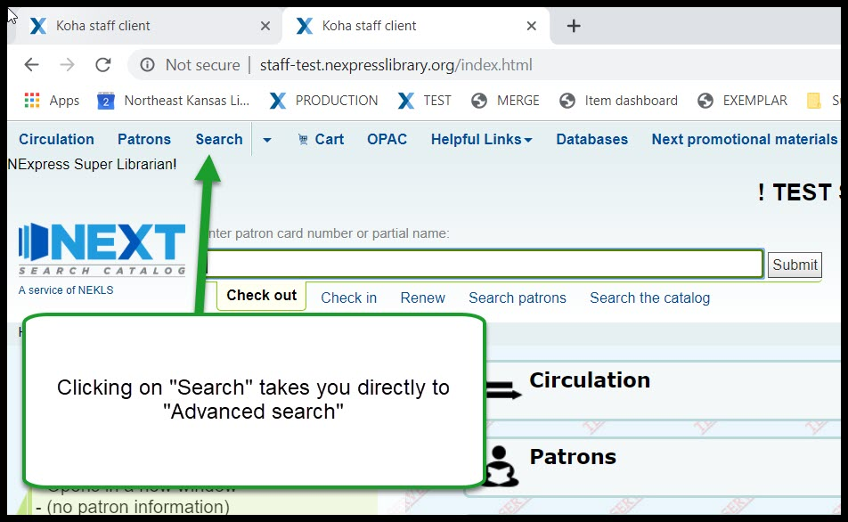
Facets for CCODE - Staff and OPAC¶
Collection codes will be added to the search facets on the left hand side of the screen.
Before:

After:
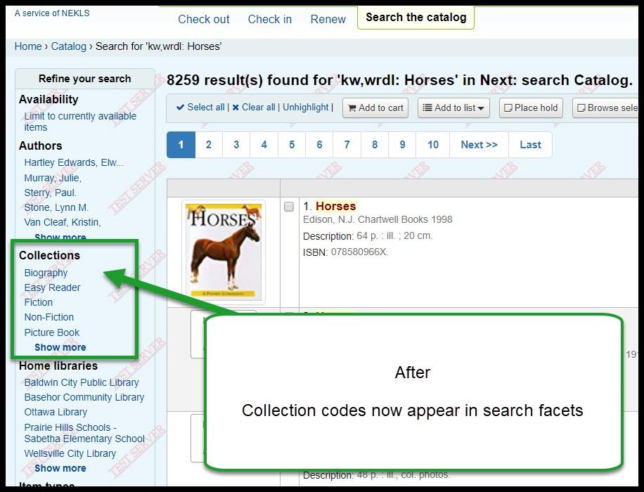
Cart sorting and printing¶
If you sort items in the cart, you can print them in the order you sort them in.

Holdings count¶
Tab will show a holdings count. Production 0003008201343 - test 0003012081166; test 0003008201777.
Before:

After:
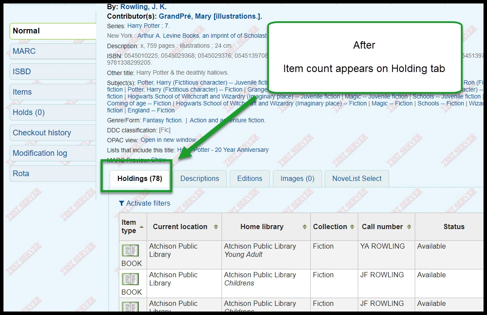

Checkout history toolbar¶
An expanded toolbar will be added to the checkout history table:
Before:

After:

526 now indexed¶
The 526 fields are the “Study program information note” fields in the Marc record. The most common thing we have stored in these fields are Accelerated Reader program information. 526$a = program name; 526$b = interest level; 526$c = reading level; 526$d = points. These fields will be indexed after the upgrade which will make them easier to search.

Patrons¶
Guarantees sorted alphabetically¶
In previous versions of Koha, guarantees would be sorted in the order they were added to the adult’s account. They will now sort alphabetically.

Renewal date on details page¶
The date of the last time a patron’s account was renewed has been added to the “Details” page.
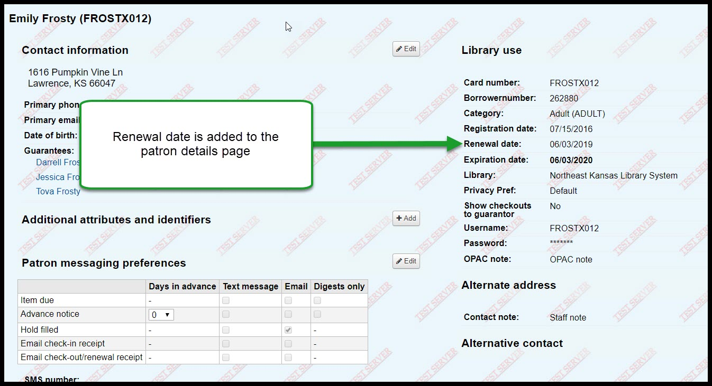
Updated date in left column on all patrons where the information is displayed¶
The date of the last time a patron’s account was modified has been added to the information column on the left hand side of the page.
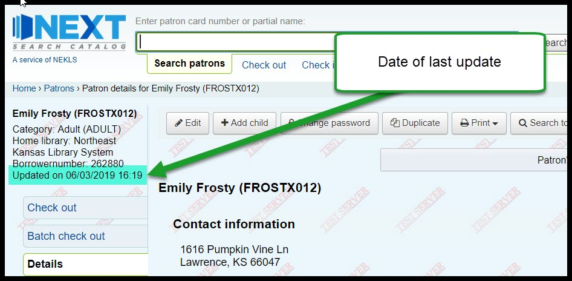
Reports¶
Create charts in Reports¶
Koha can now create charts from report data. Unfortunately there is not currently a way to download the charts it creates.
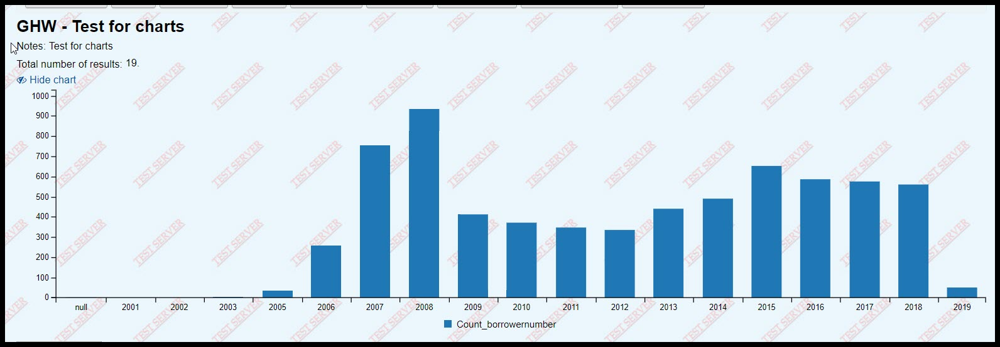
Codemirror¶
Koha now has a plugin called “Codemirror” which can help those writing reports in various ways. One example is by showing line numbers.
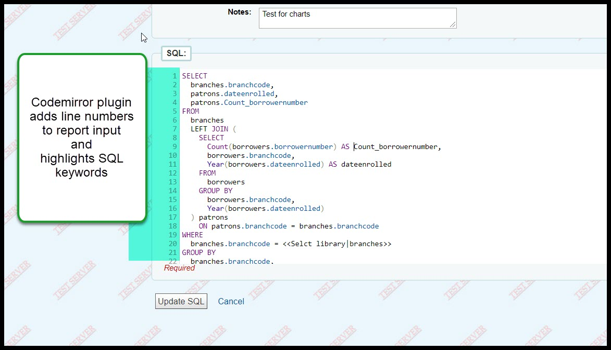
Tools/Administration¶
Circulation/fines/fees rules¶
Notes on circulation rules The upgrade adds the ability to add a note to the circulation rules so that we’ll be better able to track changes to circulation rules.
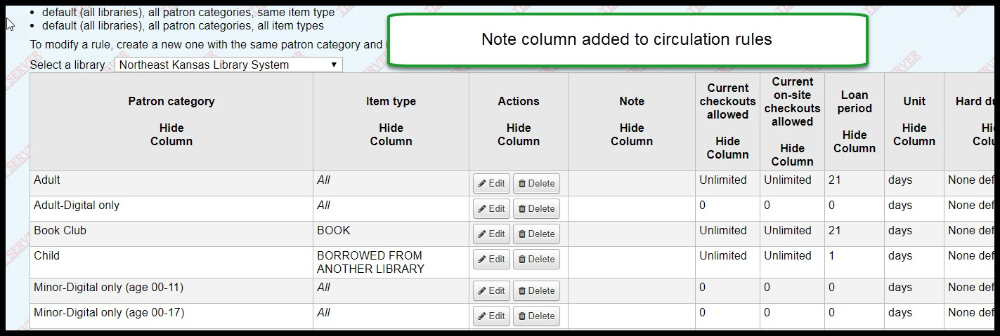
Inventory¶
Items scanned out of order
For those using the inventory tool, when you upload a list of barcodes that have been scanned, the inventory tool will now tell you if the scanned items were out of order on the shelf.

Allow skipping items with waiting holds
This is also a new option with the inventory tool.
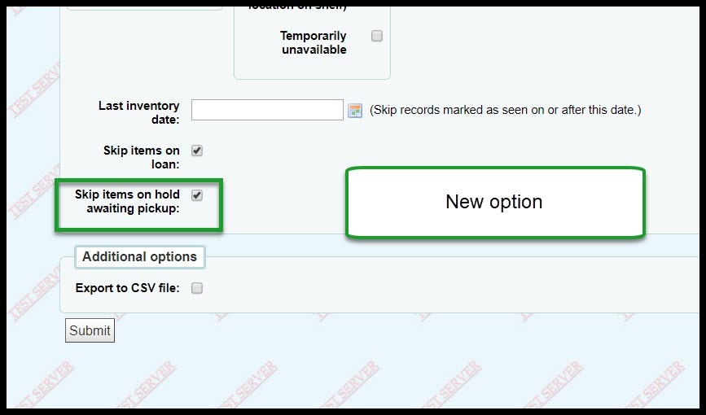
Label creator and Card creator¶
You will now be able to add descriptions to batches of labels and batches of patrons in the card creator tool
Before:
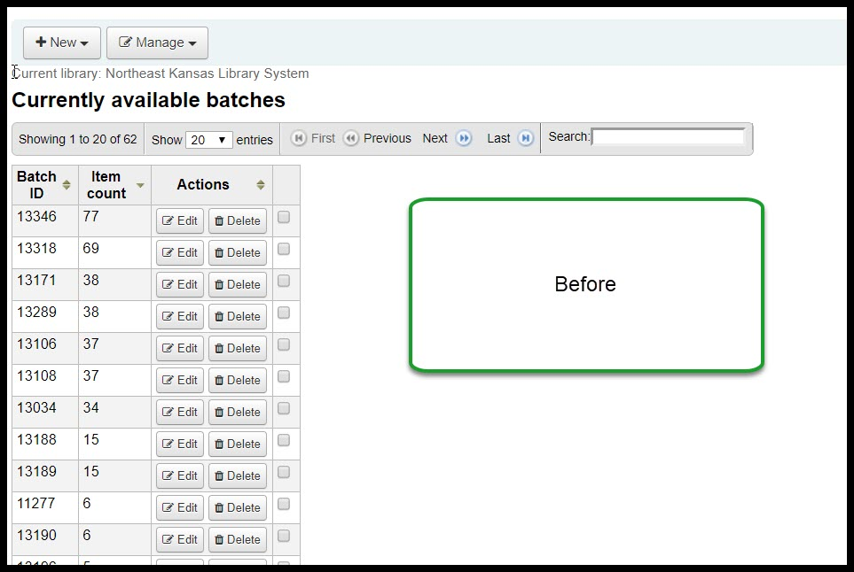After:
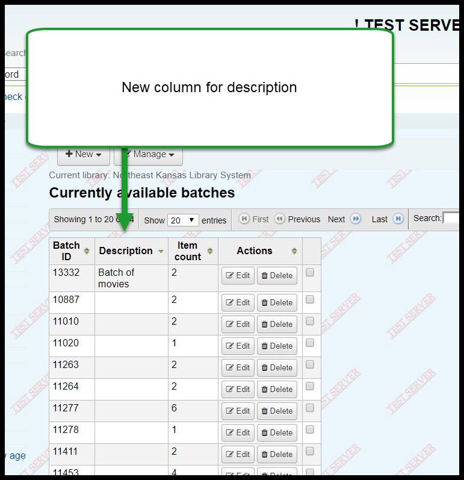Add a name to a batch on the “Batch edit” pages
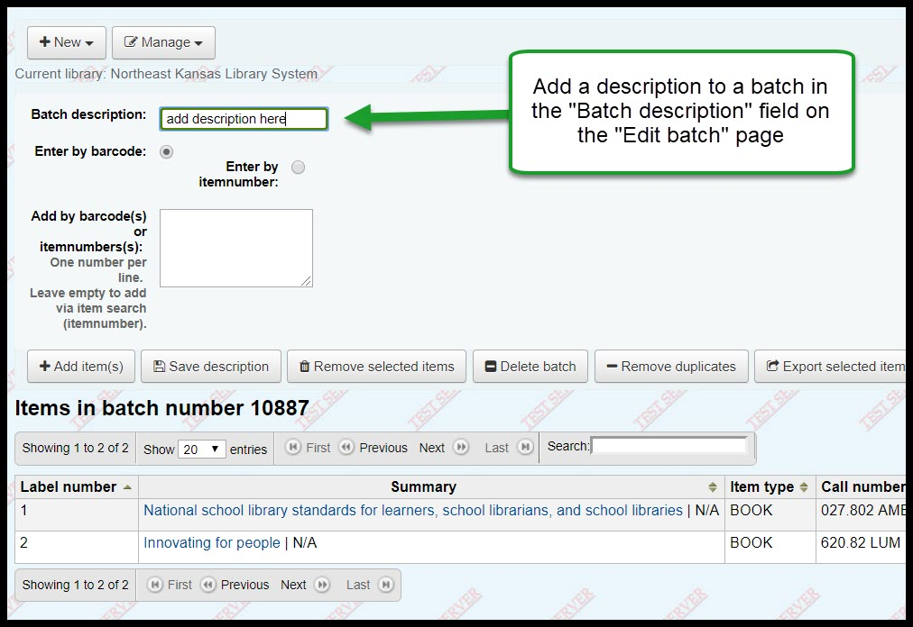Pop-up when searching for patron in Card creator
When you want to add a patron to a batch in the card creator tool, if you have to search by name, if you choose the wrong patron you can’t go back - you have to re-start the entire search. This bug has been fixed.
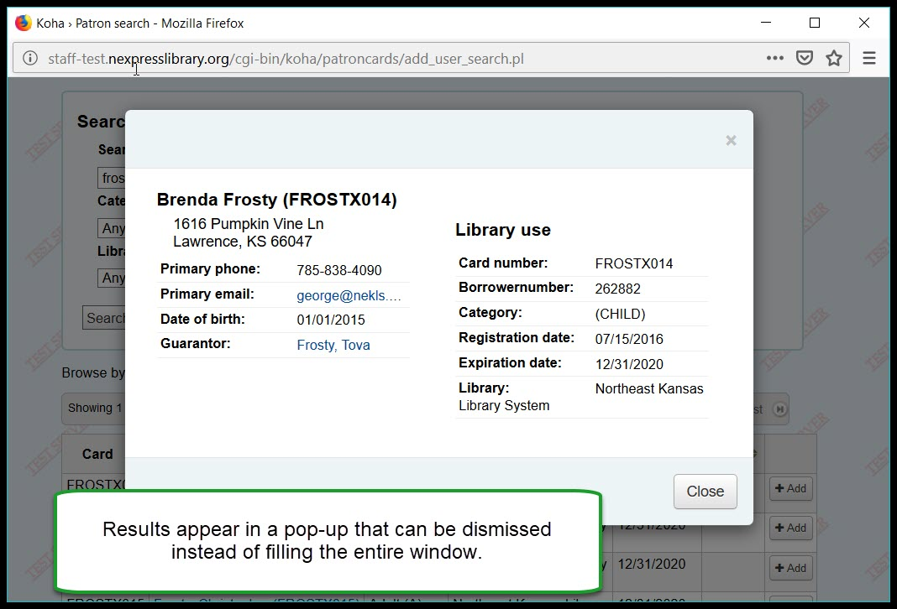Flexibility in call number splitting rules This change is impossible to demonstrate today - it’s going to require a ton of set up, but, basically, the current process with the label creator is that you can have it split the call numbers where the spaces occur - so that REF 823.43 SHA has “REF” “823.43” and “SHA” all on separate lines. This new feature would allow you to customize where the splits occur. It will, however require changing the frameworks so the 952$2 is visible and then changing the selection for the 952$2 on the items you want to create new labels for.
Lists¶
Sort list by date added
It will be possible with the new version to sort a list by the date an item was added in addition to title, author, and publication date. The default option will now be “Date added.”
Before:

After:

Date added will appear in the drop-down on the edit list page
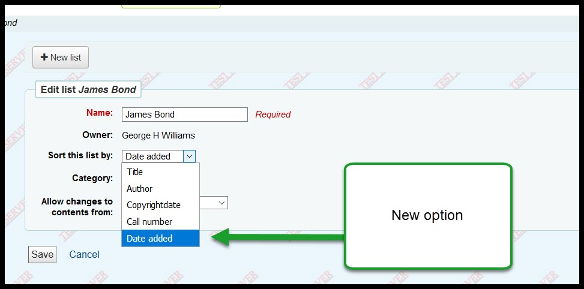
Notices¶
Table is searchable
A toolbar has been added to the notices table - making the notices table searchable (at long last).
Before:
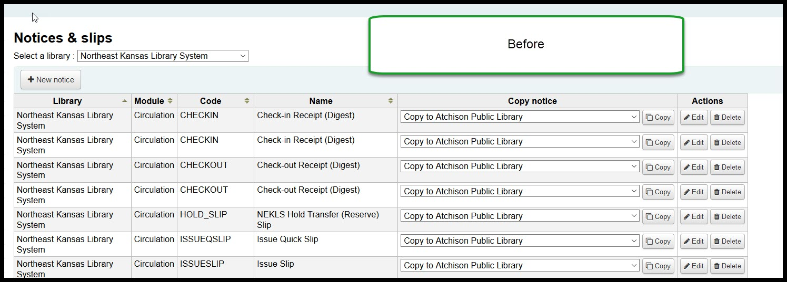After:
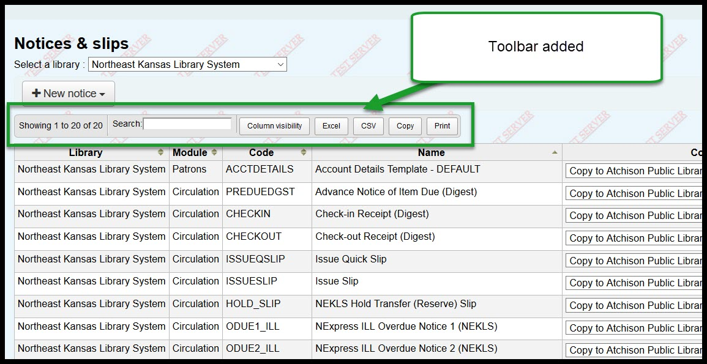
Patron lists¶
Share patron lists between staff
Patron lists can now be shared among staff members with permission to view lists.

Batch item modification¶
Holds column
A new column will show how many request are on an item that is being modified.
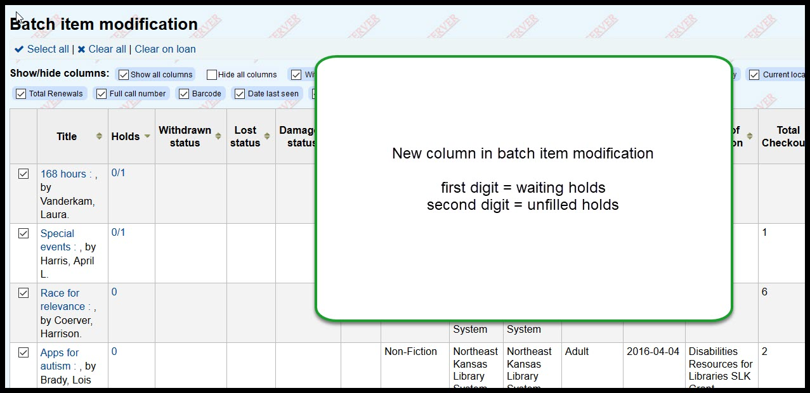